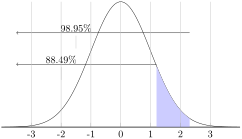
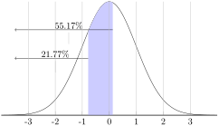

Using the Empirical Rule can give you a good idea of the probability of occurrence of a value that happens to be exactly one, two or three to either side of the mean, but how do you compare the probabilities of values that are in between standard deviations?
Z-scores are related to the Empirical Rule from the standpoint of being a method of evaluating how extreme a particular value is in a given set. You can think of a z-score as the number of standard deviations there are between a given value and the mean of the set. While the Empirical Rule allows you to associate the first three standard deviations with the percentage of data that each SD includes, the z-score allows you to state (as accurately as you like), just how many SDs a given value is above or below the mean.
Conceptually, the z-score calculation is just what you might expect, given that you are calculating the number of SDs between a value and the mean. You calculate the z-score by first calculating the difference between your value and the mean, and then dividing that amount by the standard deviation of the set. The formula looks like this:
\begin{equation*}
z = \frac{x - \mu}{\sigma}
\end{equation*}
where \(z\) is the z-score corresponding to a data value (\(x\)) in a normal distribution with a mean of \(\mu\) and a standard deviation of \(\sigma\text{.}\)
In this lesson, we will practice calculating the z-score for various values. In the next lesson, we will learn how to associate the z-score of a value with the probability that the value will occur.
Example10.3.1.
What is the z-score of a value of 27, given a set mean of 24, and a standard deviation of 2?
Find the difference between the given value and the mean, then divide it by the standard deviation.
\begin{equation*}
z = \frac{104.5 - 125}{6.2}= \frac{-20.5}{6.2} = -3.306
\end{equation*}
The z-score of 104.5 is \(z = -3.306\text{.}\) Note that the z-score is negative, since the measured value, \(104.5\text{,}\) is less than (below) the mean, \(125\text{.}\)
Example10.3.3.
Find the value represented by a z-score of \(2.403\text{,}\) given \(\mu = 63\) and \(\sigma=4.25\text{.}\)
This one requires that we solve for a missing value rather than for a missing z-score, so we just need to fill in our formula with what we know and solve for the missing value:
\begin{equation*}
z = \frac{x - \mu}{\sigma}
\end{equation*}
What is the z-score of the weight of a cow that tips the scales at 825 lbs, if the mean weight for cows of her type is 1150 lbs, with a standard deviation of 77 lbs?
Knowing the z-score of a given value is great, but what can you do with it? How does a z-score relate to probability? What is the probability of occurrence of a z-score less than +2.47?
Since z-scores are a measure of the number of SDs between a value and the mean, they can be used to calculate probability by comparing the location of the z-score to the area under a normal curve either to the left or right. The area can be calculated using calculus, but we will just use a table to look up the area.
In order to find the values for z-scores that aren’t integers, you can use a table like the one below. To find the value associated with a given z-score, you find the first decimal of your z-score on the left or right side and then the 2nd decimal of your z-score across the top or bottom of the table. Where they intersect you will find the decimal expression of the percentage of values that are less than your sample.
Table10.3.7.Z-Score Table: Table entries for z represent the area under the normal curve to the left of \(z\text{,}\) or the probability that a value in a normal distribution is less than \(z\text{.}\)
Z
.00
.01
.02
.03
.04
.05
.06
.07
.08
.09
0.0
.5000
.5040
.5080
.5120
.5160
.5200
.5239
.5279
.5319
.5359
0.1
.5398
.5438
.5478
.5517
.5557
.5596
.5636
.5675
.5714
.5754
0.2
.5793
.5832
.5871
.5910
.5948
.5987
.6026
.6064
.6103
.6141
0.3
.6179
.6217
.6255
.6293
.6331
.6368
.6406
.6443
.6480
.6517
0.4
.6554
.6591
.6628
.6664
.6700
.6736
.6772
.6808
.6844
.6879
0.5
.6915
.6950
.6985
.7019
.7054
.7088
.7123
.7157
.7190
.7224
0.6
.7258
.7291
.7324
.7357
.7389
.7422
.7454
.7486
.7518
.7549
0.7
.7580
.7612
.7642
.7673
.7704
.7734
.7764
.7794
.7823
.7852
0.8
.7881
.7910
.7939
.7967
.7996
.8023
.8051
.8079
.8106
.8133
0.9
.8159
.8186
.8212
.8238
.8264
.8289
.8315
.8340
.8365
.8389
1.0
.8413
.8438
.8461
.8485
.8508
.8531
.8554
.8577
.8599
.8621
1.1
.8643
.8665
.8686
.8708
.8729
.8749
.8771
.8790
.8810
.8830
1.2
.8849
.8869
.8888
.8907
.8925
.8944
.8962
.8980
.8997
.9015
1.3
.9032
.9049
.9066
.9082
.9099
.9115
.9131
.9147
.9162
.9177
1.4
.9192
.9207
.9222
.9236
.9251
.9265
.9279
.9292
.9306
.9319
1.5
.9332
.9345
.9357
.9370
.9382
.9394
.9406
.9418
.9430
.9441
1.6
.9452
.9463
.9474
.9485
.9495
.9505
.9515
.9525
.9535
.9545
1.7
.9554
.9564
.9573
.9582
.9591
.9599
.9608
.9616
.9625
.9633
1.8
.9641
.9649
.9656
.9664
.9671
.9678
.9686
.9693
.9700
.9706
1.9
.9713
.9719
.9726
.9732
.9738
.9744
.9750
.9756
.9762
.9767
2.0
.9773
.9778
.9783
.9788
.9793
.9798
.9803
.9808
.9812
.9817
2.1
.9821
.9826
.9830
.9834
.9838
.9842
.9846
.9850
.9854
.9857
2.2
.9861
.9865
.9868
.9871
.9875
.9878
.9881
.9884
.9887
.9890
2.3
.9893
.9896
.9898
.9901
.9904
.9906
.9909
.9911
.9913
.9916
2.4
.9918
.9920
.9922
.9925
.9927
.9929
.9931
.9932
.9934
.9936
2.5
.9938
.9940
.9941
.9943
.9945
.9946
.9948
.9949
.9951
.9952
2.6
.9953
.9955
.9956
.9957
.9959
.9960
.9961
.9962
.9963
.9964
2.7
.9965
.9966
.9967
.9968
.9969
.9970
.9971
.9972
.9973
.9974
2.8
.9974
.9975
.9976
.9977
.9977
.9978
.9979
.9980
.9980
.9981
2.9
.9981
.9982
.9983
.9983
.9984
.9984
.9985
.9985
.9986
.9986
3.0
.9987
.9987
.9987
.9988
.9988
.9989
.9989
.9989
.9990
.9990
3.1
.9990
.9991
.9991
.9991
.9992
.9992
.9992
.9992
.9993
.9993
3.2
.9993
.9993
.9994
.9994
.9994
.9994
.9994
.9995
.9995
.9995
3.3
.9995
.9995
.9996
.9996
.9996
.9996
.9996
.9996
.9996
.9997
3.4
.9997
.9997
.9997
.9997
.9997
.9997
.9997
.9997
.9998
.9998
3.5
.9998
.9998
.9998
.9998
.9998
.9998
.9998
.9998
.9998
.9998
Z-score tables like the one above describe the probability that a given value, or any value less than it, will occur in a given set. This particular table assumes you are looking to find the probability associated with a positive z-score. You may have additional work to do if the z-score is negative.
To find the percentage of values greater than a negative Z score, just look up the matching positive Z score value.
To find the percentage of values less than a negative z-score, subtract the chart value from 1.
To find the percentage of values greater than a positive z-score, subtract the chart value from 1.
Example10.3.8.
What is the probability that a value with a z-score less than 2.47 will occur in a normal distribution?
Scroll up to the table above and find “2.4” on the left or right side. Now move across the table to “0.07” on the top or bottom, and record the value in the cell: \(0.9932\text{.}\) That tells us that 99.32% of values in the set are at or below a z-score of 2.47.
Example10.3.9.
What is the probability that a value with a z-score greater than 1.53 will occur in a normal distribution?
Scroll up to the table of z-score probabilities again and find the intersection between 1.5 on the left or right and 3 on the top or bottom, record the value in the cell: \(0.937\text{.}\)
That decimal lets us know that 93.7% of values in the set are below the z-score of 1.53. To find the percentage that is above that value, we subtract 0.937 from 1.0 (or 93.7% from 100%), to get 0.063 or 6.3%.
Example10.3.10.
What is the probability of a random selection being less than 3.65, given a normal distribution with \(\mu = 5\) and \(\sigma = 2.2\text{?}\)
This question requires us to first find the z-score for the value 3.65, then calculate the percentage of values below that z-score.
Find the z-score for 3.65, using the z-score formula:
\begin{equation*}
z = \frac{3.65 - 5}{2.2} = \frac{-1.35}{2.2}=-0.61
\end{equation*}
Now we can scroll up to our z-score reference above and find the intersection of 0.6 and 0.01, which should be \(.7291\text{.}\)
Since this is a negative z-score, and we want the percentage of values below it, we subtract that decimal from 1.0 (reference the three steps highlighted by bullet points below the chart if you didn’t recall this), to get \(1 - .7291 = .2709\)
There is approximately a 27.09% chance that a value less than 3.65 would occur from a random selection of a normal distribution with mean 5 and standard deviation 2.2.
Returning to the problem,
Knowing the z-score of a given value is great, but what can you do with it? How does a z-score relate to probability? What is the probability of occurrence of a z-score less than 2.47?
A z-score lets you calculate the probability that a randomly selected value will be greater or less than a particular value in a set.
To find the probability of a z-score below +2.47, using a reference such as the table in the lesson above:
Find 2.4 on the left or right side
Move across to 0.07 on the top or bottom.
The cell you arrive at says: \(0.9932\text{,}\) which means that apx 99.32% of the values in a normal distribution will occur below a z-score of 2.47.
Problem10.3.11.Try It Now.
What is the probability of occurrence of a value with z-score greater than 1.24?
This is a negative z-score, and we want the percentage of values greater than it, so we need to subtract the value for z = +0.23 from 1: \(1 - 0.591 = .409\text{.}\) 40.9% percent of the data in a normal distribution have z-scores less than -0.23.
Do z-score probabilities always need to be calculated as the chance of a value either above or below a given score? How would you calculate the probability of a z-score between two values?
To calculate the probability of getting a value with a z-score between two other z-scores, you can use a reference table (such as Table 10.3.7) to look up the value for both scores and subtract them to find the difference.
Example10.3.13.
What is the probability associated with a z-score between 1.2 and 2.31?
To evaluate the probability of a value occurring within a given range, you need to find the probability of both the upper and lower values in the range, and subtract to find the difference.

Figure10.3.14.Image Credit: RRCC
First find z = 1.2 on the z-score probability reference above: \(.8849\text{.}\) Remember that value represents the percentage of values below 1.2.
Next, find and record the value associated with z = 2.31: \(.9896\)
Since approximately 88.49% of all values are below z = 1.2 and approximately 98.96% of all values are below z = 2.31, there are 98.96% -88.49% = 10.47% of values between.
Example10.3.15.
What is the probability that a random selection will be between 8.45 and 10.25, if it is from a normal distribution with \(\mu = 10\) and \(\sigma = 2\text{?}\)
This question requires us to first find the z-scores for the value 8.45 and 10.25, then calculate the percentage of value between them by using values from a z-score reference and finding the difference.
Find the z-score for 8.45, using the z-score formula:
Now find the percentages for each, using a reference (don’t forget we want the probability of values less than our negative score and less than our positive score, so we can find the values between):
At this point, let’s sketch the graph to get an idea what we are looking for:

Figure10.3.16.Image Credit: RRCC
Finally, subtract the values to find the difference:
\(.5517 - .2177 = .3340\) or about 33.4%
There is approximately a 33.4% chance (or 0.334 probability) that a value between 8.45 and 10.25 would result from a random selection of a normal distribution with mean 10 and standard deviation 2.
Problem10.3.17.Try It Now.
What is the probability of a z-score between -0.93 and 2.11?
Using the z-score probability table above, we can see that the probability of a value below -0.93 is .1762, and the probability of a value below 2.11 is .9826. Therefore, the probability of a value between them is .9826-.1762 = .8064
Using the z-score probability table, we see that the probability of a value below z = 1.39 is .9177, and a value below z = 2.03 is .9788. That means that the probability of a value between them is .9788 - .9177 = .0611.